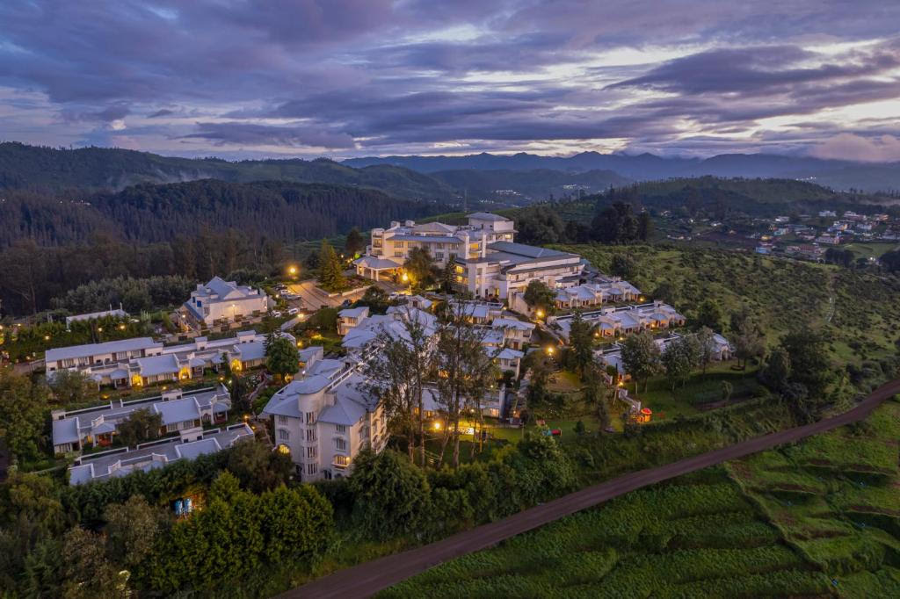
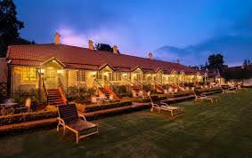
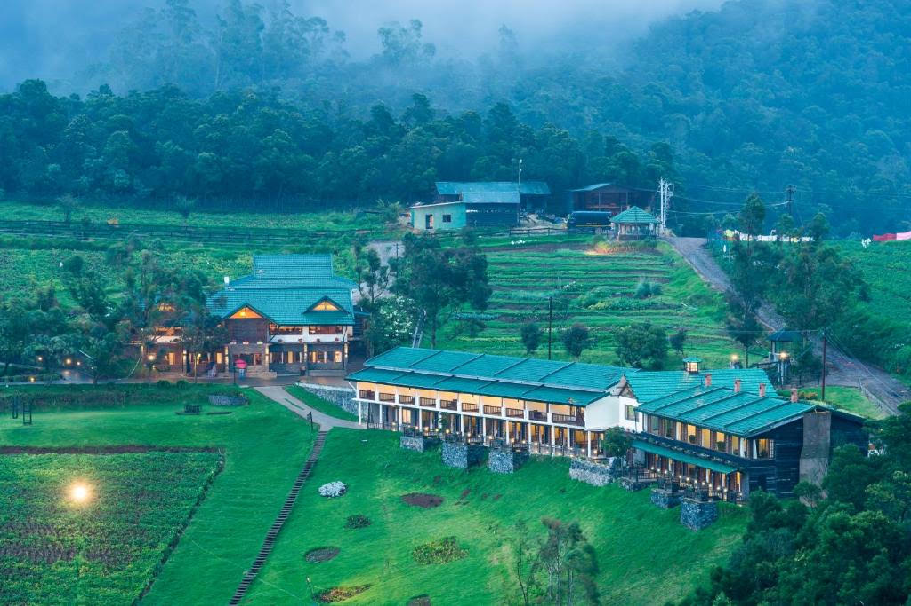
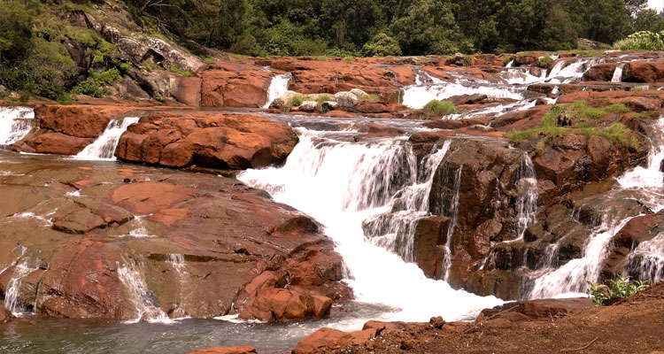

A resort with stunning valley views that provides family entertainment and kids-friendly activities.
Day 1
- Breakfast at Earl's Secret
- Tea Plantation Tour
- Stargazing at Doddabetta Peak
8:00 AM
A family-friendly restaurant known for its delicious breakfast options.
4:00 PM
Visit a tea plantation to learn about tea making and relax in the scenic environment.
8:30 PM
A peaceful evening activity enjoying the night sky with family.
Recommended Hotels

@ Sterling Ooty Fern Hill, Udhagamandalam

@ Taj Savoy Hotel, Udhagamandalam
A heritage hotel set amidst the beautiful hills, offering a family-friendly experience with spacious rooms and a play area for kids.

@ Destiny The Farm Resort, Udhagamandalam
A farm-themed resort perfect for families looking to connect with nature, offering horse riding and farm activities.
Recommended Areas

Avalanche Lake
Located 28 km away from Ooty, Avalanche lake is a must visit when on Ooty Tour. This lake, beautifully lying amid the lush greenery of mountains and landscapes mesmerises every visitor

Pykara Waterfalls
Situated on the Ooty Mysore road, this waterfall is around 20 km away from Ooty. Developed as a picnic spot, this place is ideal to come and relax while admiring the scenic beauty of the waterfall and greenery around.

Ooty Rose Garden
Rose Garden is another popular place to visit in Ooty. Maintained by Government of Tamil Nadu, this garden is spread across 4 hectares of land and proudly presents more than 20 thousand variety of roses.